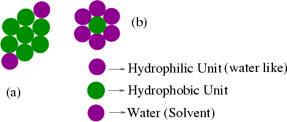

Recently there is growing interest on a new class of lyotropic liquid crystals (LC), so called lyotropic chromonic liquid crystals (LCLC), due to their diverse potential application in many areas, in particular in biology. The LCLC family embraces a range of dyes, drugs, nucleic acids, antibiotics and anti-cancer agents$^1$. They are fundamentally different from the conventional amphiphilic systems: their molecules are plank-like rather than rod-like; rigid rather than flexible, and aromatic rather than aliphatic. They form isotropic, nematic and columnar phases but so far there is no clear understanding between the molecular structure and the supramolecular aggregates formed by the LCLC. We have developed a prototype model of LCLC's which approximate the overall shape of the molecules and the nature of the interactions. To understand the self-assembly of chromonic molecules, we have carried out simulation in a binary mixture of our model LCLC and water molecules. We have studied the effect of concentration, temperature and molecular shape on the nature of the resulting mesophases. We have computed different thermodynamical and structural quantities in order to compare with the available relevant experimental results and to probe the influence of a small set of parameters on the self-aggregation phenomena in these complex systems.

Model Chromonic Molecules
(Poster presented at ILCC)
page
1-3
page
4
page
5-9
page
10-12